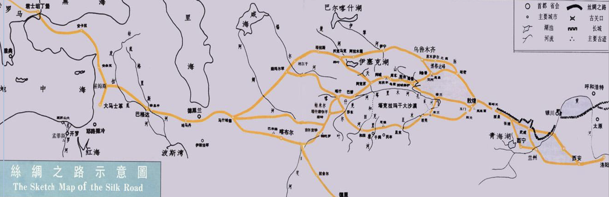
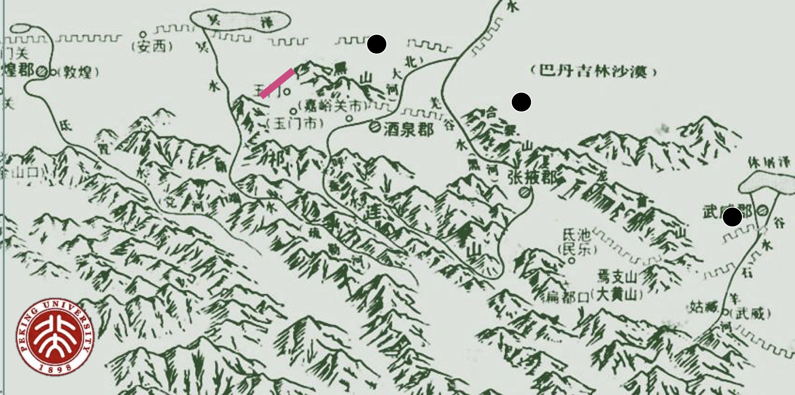
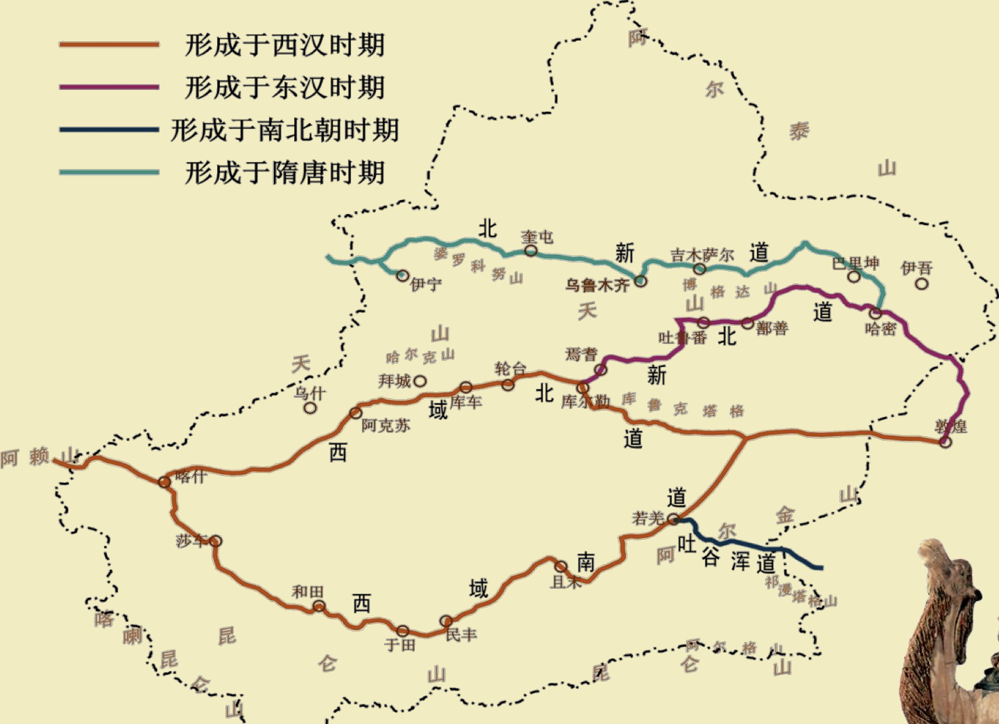
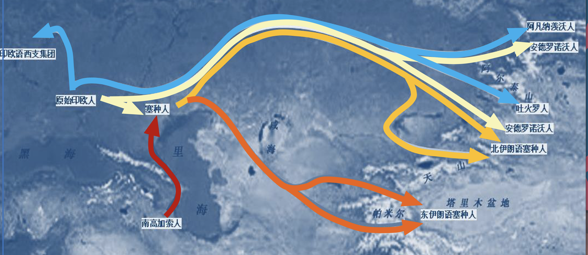

丝绸之路的命名
- 1877年，德国地理学家李希霍芬(F. von Richthofen)在 《中国》一书中，首次把汉代中国和中亚南部、西部以及印度 之间的丝绸贸易为主的交通路线，称作“丝绸之路”。其后， 德国历史学家赫尔曼(A. Herrmann)在 1910 年出版的《中国和 叙利亚之间的古代丝绸之路》一书中，根据新发现的文物考古 资料，进一步把丝绸之路延伸到地中海西岸和小亚细亚，确定 了丝绸之路的基本内涵，即它是中国古代经由中亚通往南亚、 西亚以及欧洲、北非的陆上贸易交往的通道。

- 其实在官方正式提出丝绸之路这个概念之前，民间早就开始使用这条道路了。
|
|
- 丝绸之路正式打通在汉武帝时期，征讨匈奴，并且有张骞出使西域，从而正式打通了这条道路，开启了东西方文化交流的序幕。除了张骞，还有一位叫做郑吉的官员担任了第一任西域都护，负责管理这条道路的安全和畅通。
丝绸之路各段的走向
- 河西走廊位于黄河以西，东起乌鞘岭，西至古玉门关，南北介于祁连山、阿尔金山和北山（马鬃山、合黎山和龙首山）间，长约九百公里，宽数公里至近百公里，为西北—东南走向的狭长平地，形如走廊。

- 在河西走廊上，有两个重要关口，分别是玉门关和阳关，如果你今天前往它们的遗址，你会发现它们处在的地势就是普通的平原，完全不是什么险要的地方，那么为什么要在这里设置关口呢？原来在古代，这两个关口所在地都流通着一条河流，在干旱的大陆中央地区，这条河流就像是生命线一样，控制了它的出入就等于控制了这条道路的出入，所以才会在这里设置关口。
|
|
-
天山是中亚东部地区（主要在中国新疆）的一条大山脉，横贯中国新疆的中部，西端伸入哈萨克斯坦。古名白山，又名雪山，冬夏有雪。故名，匈奴谓之天山，唐时又名折罗漫山，高达二万一千九百尺，长约2500千米，宽约250–300千米，平均海拔约5千米。最高峰是托木尔峰，海拔为7435.3米， 汗腾格里峰海拔6995米，博格达峰的海拔5445米。这些高峰都在中国境内，峰顶白雪皑皑。锡尔河、楚河和伊犁河都发源于此山。天山山脉把新疆分成两部分：南边是塔里木盆地；北边是准噶尔盆地。
-
昔日西域三十六国与今日绿洲的位置几乎吻合，绿洲是丝绸之路的依托。
-
在丝绸之路中，尤以新疆境内的路线最为复杂，之所以在东汉开通了新北道是因为在原来的西域北道需要经过库姆塔格沙漠，那里被人称为旱海。。。吐谷浑道是因为在南北朝时期南方政权由于不能参与丝绸之路，所以开通了这条道路。

|
|
|
|
丝绸之路上的人口迁移与文化交流
- 早期新疆人口迁入如下图所示，基本上都是西亚和中亚的民族，后来随着丝绸之路的开通，更多的中原人移民而来，形成了一个多民族的融合地区。

- 吐火罗语字母源于印度波罗米字母（斜体），它属于印欧语系，6-8世纪使 用。佉卢文是中国新疆地区最早使用的民族古文字之一，起源于古代犍陀罗, 后来流行于中亚广大地区。在新疆早期，北方多使用吐火罗语，南方多使用佉卢文，后来随着中原文化的输入，汉字也逐渐流行起来。
|
|
- 新疆的文化经历几次变化，这样的变化与持不同文化的人群流动并获得统治地位有关。地处东西文化交通大道上的新疆，经历了突厥化、伊斯兰化的文化发展历程。在五世纪时，来自阿尔泰山北方的突厥人进入新疆，带来了阿尔泰语系的突厥语族，这就是突厥化。伊斯兰化同理(绝对不是我没来得及记)